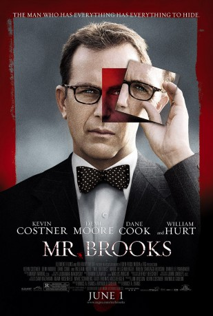
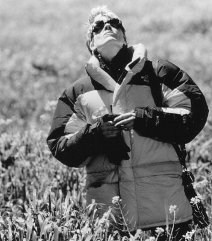
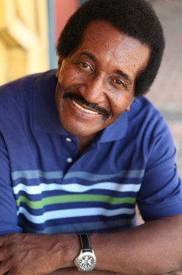

#8090 Mr. Brooks - Der Mörder in Dir
Alternativ: Mr. Brooks
 
 IMDB-Wertung: 7.3 / 10
IMDB-Wertung: 7.3 / 10  Metascore: 0
Metascore: 0 
Earl Brooks is a highly respected businessman and was recently named Portland's Man of the Year. He hides a terrible secret however: he is a serial killer known as the Thumbprint Killer. He has been attending AA meetings and has kept his addiction to killing under control for two years now but his alter ego, Marshall, has re-appeared and is pushing him to kill again. When he does kill a couple while they are making love, he is seen and photographed by someone who also has his own death and murder fetish. In a parallel story, the police detective investigating the murder is having problems of her own. She is going through a messy divorce and a violent criminal who had vowed revenge some years before has escaped from prison and is after her.
Jahr: 2007
Dauer: 120 Minuten
FSK: 18
Land: USA Studio: MGMTonspuren:
Untertitel:
Auflösung: 1080p (1920x1080) Größe: 10147 MB
Genre: Thriller, Drama, Krimi
Regisseur: Bruce A. Evans
Drehbuch: Bruce A. Evans
Soundtrack: Ramin Djawadi
Darsteller:
 Kevin Costner als Mr. Earl Brooks
Kevin Costner als Mr. Earl Brooks Demi Moore als Det. Tracy Atwood
Demi Moore als Det. Tracy Atwood Dane Cook als Mr. Smith
Dane Cook als Mr. Smith William Hurt als Marshall
William Hurt als Marshall Marg Helgenberger als Emma Brooks
Marg Helgenberger als Emma Brooks Ruben Santiago-Hudson als Hawkins
Ruben Santiago-Hudson als Hawkins Danielle Panabaker als Jane Brooks
Danielle Panabaker als Jane Brooks Aisha Hinds als Nancy Hart
Aisha Hinds als Nancy Hart-  Lindsay Crouse als Captain Lister
 Jason Lewis als Jesse Vialo
Jason Lewis als Jesse Vialo Reiko Aylesworth als Sheila - Jesse's Lawyer
Reiko Aylesworth als Sheila - Jesse's Lawyer Matt Schulze als Thorton Meeks
Matt Schulze als Thorton Meeks- Yasmine Delawari als Sunday
- Traci Dinwiddie als Sarah Leaves
- Michael Cole als Atwood's Lawyer
- Megan Brown als Dance Couple (Woman)
- Ross Francis als Dance Couple (Man)
- Kit Gwin als Detective Carfagno
 Marcus Hester als Detective Smolny
Marcus Hester als Detective Smolny Jamie McShane als Crime Lab Technician
Jamie McShane als Crime Lab Technician Laura Bailey als Flight Attendant
Laura Bailey als Flight Attendant- Jon Paul Burkhart als Flight Attendant
- Matthew Posey als AA Leader
- Brandon Ray Olive als Summons Server
 Kanin Howell als Pick-Up Driver
Kanin Howell als Pick-Up Driver Steve Coulter als Roger
Steve Coulter als Roger- Stephen Michael Ayers als Mr. Clifford
- Mark Scarboro als Detective
- Phillip DeVona als Police Officer
 Dodie Brown als Police Officer (uncredited)
Dodie Brown als Police Officer (uncredited) Ted Ferguson als Restaurant Patron (uncredited)
Ted Ferguson als Restaurant Patron (uncredited) Deborah R. Jones als CSI Agent (uncredited)
Deborah R. Jones als CSI Agent (uncredited)- Gio March als Police Officer (uncredited)
-  James Paul als Street Pedestrian (uncredited)
- Mary Alfred Thoma als Banquet Guest (uncredited)
- Van White als Officer Shanks (uncredited)
- Steven E. Williams als Motorist (uncredited)
- Cindi Woods als CSI Agent (uncredited)
- Jim Farnum als Master of Ceremonies
- Rosie Cafarelli als Vaughn
- Ben Glass als ER Doctor
- Bradley Evans als Cop
- David Gibbons als Box Plant Manager
- Jasa Abreo als On Plane Flight Attendant
- Rommel Sulit als Japanese Client
- Mike Armstrong als Extra (uncredited)
- Lizzie Brubaker als Extra (uncredited)
- Chuck Halley als Banquet Guest (uncredited)
- Michael J. Hebert als Man reading newspaper (uncredited)
- Colvin Roberson als Driver (uncredited)
Datei: X:\FSK18-2000-2009\Mr. Brooks - Der Mörder in Dir (2007, FSK18, 1920x1080).mkv seit 24.01.2018
Festplatte: FSK18
 Es gibt insgesamt 106 Filme in der Gruppe 'FSK18-2000-2009'
Es gibt insgesamt 106 Filme in der Gruppe 'FSK18-2000-2009'